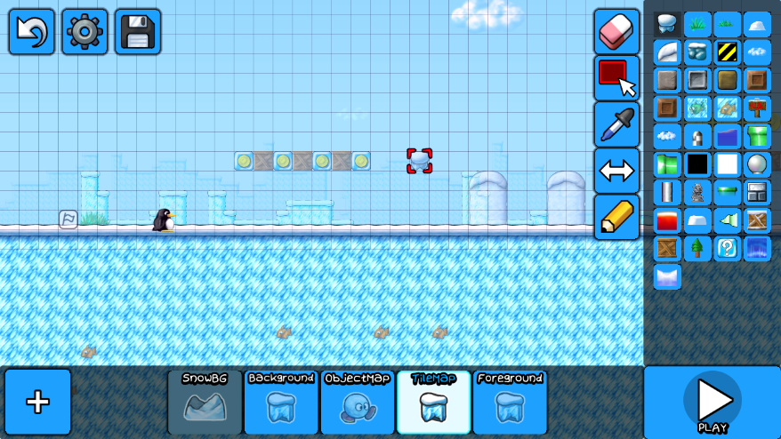

What is SuperTux Classic?
SuperTux Classic is a 2D platformer game where you play as a penguin in Antarctica.
It is a complete remaster of the Milestone 1 version of SuperTux (versions 0.1.0 - 0.1.4)
created from the ground up in the Godot engine!
It features enhanced graphics, sounds, music, and gameplay, but retains the core design
reminiscent of classic platformer titles such as Super Mario Bros.
The game is completely open source, being licensed under the GNU GPL.
This means you can do whatever you like with the game's source files (under the license's conditions),
whether that's redistributing the game, making mods, re-skins, custom levels, you name it!
SuperTux Classic v0.4.2 is out!
Fix game crash when trying to fight Nolok.
Fixed a bug where the final World 1 level "The Mighty Nolok"
crashes when you try to access it, making it impossible to beat the game.
(Removed Nolok's diabolical traps which take advantage of
Tux's ultra-fast speed 🤣).
SuperTux Classic v0.4.1 is available!
Controller support is here! (And other minor fixes).
Other features of this release include:
- Controller support (everyone go thank Tulpenkiste for adding this, she is the best!).
- Rebindable controller controls! (You can adjust what face buttons / joysticks do what).
- Updating the Android version to Android 13 (we changed the Android Target SDK from 32 to 33)
(Google mandated this change).
- Some minor fixes.
To do for the next release:
- Optimise the game for mobile devices (currently it runs very slowly on Android).
- Can somebody please help me do this? I don't really have much free time to work on this game atm...
- Add controller support to the level editor via use of a cursor, probably.
- Finish adding the Ice Dragon (Yoshi's clone).
- Bonus Island 1 boss fight maybe????
- Mod support also maybe????
SuperTux Classic v0.4.0 is finally out!
The level editor is finally here!
An all-new, custom-built level editor has been added into SuperTux Classic!
You can now make your own SuperTux Classic levels straight from within the game itself!
This editor is fully featured and supports all features within the game, with a few exceptions*.

The editor was designed to be as intuitive as possible to use.
If you would like to give feedback or suggestions on its design for future improvement, please join the
SuperTux Classic Discord Server.
The editor is also completely usable on mobile devices, with relevant adjustments being made to support touch controls.
New features also include:
- A toggle for auto-run (you can choose to walk).
- A huge restructuring of the game's internals to make way for the level editor.
- Many bug fixes and optimisations (and probably new bugs to fix, given by the complexity of the new features 😬).
*The Level Editor does not currently support boss fights, teleporters in world maps, or scrolling text scenes for intros/outros of worlds.
Happy SuperTuxing!! Enjoy the level editor - I can't wait to see what levels are made with it!
SuperTux Classic v0.3.5 is there!
Bonus Island I is here!
There are 24 new levels you can play in Bonus Island I! Just watch out for the fish! And the lava! And maybe those spinning flame orbs!
Huge thanks to Tlaloc1 for helping me port over these levels.
Have fun!
SuperTux Classic v0.3.4 is out!
This is mainly a tweak / bugfix release.
This release finalizes the mobile support for SuperTux Classic. The game is now fully playable on mobile devices.
This required changing the engine version of the game from Godot 3.4.4 to Godot 3.5.2, which brought with it a lot of bugs which needed to be fixed for the game to be stable again.
You can get SuperTux Classic for Android on the Google Play Store! (As well as simply downloading the APK).
Read more news posts in the news section.
{kind=link}
{kind=link}